유기농업기사 (2018-08-19 기출문제)
1과목: 재배원론
1. 대기의 조성에서 질소 가스는 약 몇 %인가?
- 21
- 79
- 0.03
- 50
(정답률: 68%)

2. 다음 중 작물의 적산온도가 가장 낮은 것은?
- 벼
- 메밀
- 담배
- 조
(정답률: 79%)
3. 수박 접목의 특성에 대한 설명으로 가장 거리가 먼 것은?
- 흡비력이 강해진다.
- 과습에 잘 견딘다.
- 품질이 우수해진다.
- 흰가루병에 강해진다.
(정답률: 67%)
4. 다음에서 설명하는 것은?
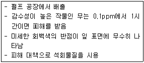
- 아황산가스
- 불화수소가스
- 염소계 가스
- 오존가스
(정답률: 50%)
5. 다음 중 C3식물에 해당하는 것으로만 나열된 것은?
- 옥수수, 수수
- 기장, 사탕수수
- 명아주, 진주조
- 보리, 밀
(정답률: 76%)
6. 다음 중 열해에 대한 설명으로 가장 적절하지 않은 것은?
- 암모니아의 축적이 많아진다.
- 철분이 침전된다.
- 유기물의 소모가 적어져 당분이 증가한다.
- 증산이 과다해진다.
(정답률: 75%)
7. ( )에 알맞은 내용은?
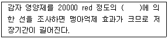
- 15C
- 60Co
- 17C
- 40K
(정답률: 52%)
8. 벼의 침수피해에 대한 내용이다. ( )에 알맞은 내용은?
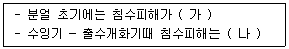
- 가: 작다, 나: 작아진다.
- 가: 작다, 나: 커진다.
- 가: 크다, 나: 커진다.
- 가: 크다, 나: 작아진다.
(정답률: 73%)
9. 다음 중 자연교잡률이 가장 낮은 것은?
- 아마
- 밀
- 보리
- 수수
(정답률: 37%)
10. 다음 중 노후답의 재배대책으로 가장 거리가 먼 것은?
- 조식재배를 한다.
- 저항성 품종을 선택한다.
- 무황산근 비료를 시용한다.
- 덧거름 중점의 시비를 한다.
(정답률: 47%)
11. 다음 중 ( )에 알맞은 내용은?
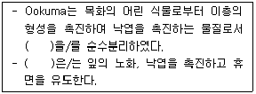
- 에틸렌
- 지베렐린
- ABA
- 시토키닌
(정답률: 66%)
12. 다음 중 천연 식물생장조절제의 종류가 아닌 것은?
- 제아틴
- 에세폰
- IPA
- IAA
(정답률: 49%)
13. 다음 중 작물의 내염성 정도가 가장 강한 것은?
- 가지
- 사과
- 감자
- 양배추
(정답률: 69%)
14. 다음 중 작물의 기원지가 중국지역에 해당하는 것으로만 나열된 것은?
- 감자, 땅콩, 담배
- 조, 피, 메밀
- 토마토, 고추, 수수
- 수박, 참외, 호밀
(정답률: 74%)
15. 다음 중 작물의 주요온도에서 최저온도가 가장 낮은 것은?
- 귀리
- 옥수수
- 호밀
- 담배
(정답률: 56%)
16. 다음 중 같은형에 해당하는 것은?
- 그루콩
- 그루조
- 가을메밀
- 올콩
(정답률: 70%)
17. 다음 중 상대습도가 70%일 때 쌀의 안전저장 온도 조건으로 가장 적절한 것은?
- 5℃
- 10℃
- 15℃
- 20℃
(정답률: 46%)
18. 다음 중 단일식물에 해당하는 것으로만 나열된 것은?
- 샐비어, 콩
- 양귀비, 시금치
- 양파, 상추
- 아마, 감자
(정답률: 57%)
19. 벼와 같이 식물체가 포기를 형성하는 작물을 무엇이라 하는가?
- 포복형작물
- 주형작물
- 내냉성작물
- 내습성작물
(정답률: 77%)
20. 다음 중 굴광현상이 가장 유효한 것은?
- 440~480nm
- 490~520nm
- 560~630nm
- 650~690nm
(정답률: 68%)
2과목: 토양비옥도 및 관리
21. 토양의 양이온 치환용량과 가장 관계가 적은 것은?
- 유기물 함량
- 수분 함량
- 점토 함량
- 비표면적
(정답률: 40%)
22. 전형적인 농경지 토양에 서식하는 생물 중 가장 많은 수를 차지하는 것은?
- 세균
- 사상균
- 조류
- 선충
(정답률: 73%)
23. 다음 중 스펙타이트를 많이 포함한 토양에 부숙된 유기물을 가할 때 나타나는 현상이 아닌 것은?
- 수분 보유력이 증가한다.
- 토양 pH가 감소한다.
- CEC가 증가한다.
- 입단화 현상이 증가한다.
(정답률: 65%)
24. 석회를 사용 시 검출순위가 가장 빠른 양이온은?
- H+
- Mg2+
- Na+
- K+
(정답률: 41%)
25. 토양수분의 토양수분장력(pF) 크기 순서로 옳은 것은?
- 흡수수 ＞ 중력수 ＞ 모관수
- 중력수 ＞ 모관수 ＞ 흡습수
- 흡습수 ＞ 모관수 ＞ 중력수
- 모관수 ＞ 중력수 ＞ 흡습수
(정답률: 64%)
26. 토양 생성에 관여하는 풍화작용 중 성질이 다른 하나는?
- 산화작용
- 가수분해작용
- 수화작용
- 침식작용
(정답률: 76%)
27. 토양생물이 고등식물에 끼치는 유익작용은?
- 각종 병을 일으킨다.
- 황산염을 환원한다.
- 탈집작용을 한다.
- 공기 중 유리 질소를 고정한다.
(정답률: 78%)
28. 다음 중 우리나라 밭토양의 특성에 해당하는 것은 모두 몇 가지인가?
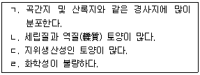
- 1
- 2
- 3
- 4
(정답률: 47%)
29. 지표면 피부의 직접적인 효과 및 피복재료에 대한 설명으로 거리가 먼 것은?
- 지표면 피복은 유거수의 유거속도를 줄인다.
- 지표면을 피복하면 토양 보온효과가 있다.
- 지표면 피복은 강우에 의한 토양입자의 분산을 경감시킨다.
- 탄질율이 낮은 재료를 지표면에 피복하면 토양 질소의 함량이 감소한다.
(정답률: 72%)
30. 다음 중 비점오염원에 해당하는 것은?
- 폐기물 매립지
- 산성비
- 송유관
- 가축사육장
(정답률: 77%)
31. 다음 점토광물 중 수분함량에 따라 부피가 가장 크게 변하는 것은?
- 스멕타이드
- 가을리나이트
- 버미클라이트
- 일라이트
(정답률: 38%)
32. 식물의 양분흡수 이용능력에 직접적으로 영향을 주는 요인으로 거리가 먼 것은?
- 뿌리의 표면적
- 뿌리의 호흡작용
- 근권의 탄산가스 농도
- 양분 활성화와 관련되는 뿌리분비물의 종류와 양
(정답률: 61%)
33. 질소성분 100kg을 토양에 처리하여 작물로 회수된 질소 양이 50kg이었고, 시비하지 않은 토양에서는 작물로 20kg의 질소가 회수되었다. 이 때 이 질소비료의 질소이용효율은?
- 20%
- 30%
- 50%
- 70%
(정답률: 59%)
34. 다음 중 토양 열전도도가 가장 높은 것은?
- 이탄토
- 양토
- 식토
- 사토
(정답률: 52%)
35. 난분해성 리그닌의 분해능력이 가장 뛰어난 미생물은?(오류 신고가 접수된 문제입니다. 반드시 정답과 해설을 확인하시기 바랍니다.)
- 세균
- 사상균
- 방사상균
- 조류
(정답률: 47%)
36. 지각을 구성하는 원소 중 함량이 가장 많은 것은?
- 알루미늄
- 규소
- 산소
- 칼슘
(정답률: 50%)
37. 토양의 대형동물에 대한 설명으로 옳은 것은?
- 몸의 길이가 5cm 이상인 동물을 말한다.
- 대형동물에는 지네, 선충 등이 있다.
- 개미는 농업적으로 가장 중요한 대형동물이다.
- 지렁이는 유기물이 많은 점질토양에서 잘 자라는 대형동물이다.
(정답률: 74%)
38. 질소기아현상에 대한 설명으로 틀린 것은?
- 볏집을 넣어 주면 해소될 수 있다.
- 토양의 미생물과 식물체 사이의 질소 경쟁이다.
- 대개 탄질비가 30 이상일 때 나타난다.
- 탄질비가 15 이하가 되면 해소된다.
(정답률: 61%)
39. 다음 중 토양의 화학적 반응에 의해 가장 많이 영향을 받는 것은?
- 토양 삼상의 비율
- 토성
- 토양 pH
- 토양의 구조
(정답률: 80%)
40. 풍식에 대한 설명으로 옳은 것은?
- 풍식은 건조지역보다 습윤지역에서 잘 일어난다.
- 우리나라에서는 해안 모래바닥에서 주로 일어난다.
- 풍식의 정도는 바람의 속도에 반비례한다.
- 토양입자는 물에서보다 공기 중에서 입자 상호간 충돌이 많다.
(정답률: 60%)
3과목: 유기농업개론
41. 유기농산물 및 유기염산물의 토양개량과 작물생육을 위하여 사용이 가능한 물질 중 “해수”의 사용가능 조건에 대한 내용으로 틀린 것은?
- 천연에서 유래할 것
- 입면(笠面) 시비용으로 사용할 것
- 충분한 발효와 희석을 거쳐 사용할 것
- 토양에 염류가 쌓이지 않도록 필요한 최소량만을 사용할 것
(정답률: 48%)
42. 유리섬유를 첨가하지 않은 아크릴 수지 100%의 경질관에 해당하는 것은?
- PC판
- FRP판
- FRA판
- MMA판
(정답률: 55%)
43. 다음 중 ( 가 )에 알맞은 내용은?
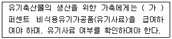
- 100
- 80
- 70
- 50
(정답률: 77%)
44. 중경의 장점으로 틀린 것은?
- 토양통기의 조장
- 단근 억제
- 토양수분의 증발 경감
- 비효증진 효과
(정답률: 63%)
45. 다음 중 육종과정이 옳게 나열된 것은?
- 육종목표 설정 → 신품종 결정 및 등록 → 변이작성 → 지역적응성 검정 → 생산성 검정
- 육종목표 설정 → 변이작성 → 지역적응성 검정 → 생산성 검정 → 신품종 결정 및 등록
- 육종목표 설정 → 변이작성 → 생산성 검정 → 지역적응성 검정 → 신품종 결정 및 등록
- 육종목표 설정 → 변이작성 → 신품종 결정 및 등록 → 생산성 검정 → 지역적응성 검정
(정답률: 61%)
46. 수경재배의 분류에서 분무경에 대한 설명으로 옳은 것은?
- 고형배지경이면서 무기배지경에 해당한다.
- 고형배지경이면서 유기배지경에 해당한다.
- 순수수경이면서 기상배지경에 해당한다.
- 순수수경이면서 액상배지경에 해당한다.
(정답률: 56%)
47. 다음에서 설명하는 것은?
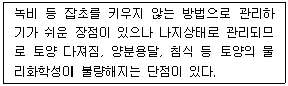
- 청경재배
- 피복재배
- 설충재배
- 초생재배
(정답률: 63%)
48. 유기축산물 사료 및 영양관리에 대한 내용이다. 다음 중 내용이 틀린 것은?
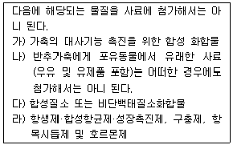
- 가)
- 나)
- 다)
- 라)
(정답률: 66%)
49. 산성토양에 극히 강한 것으로만 나열된 것은?
- 자운영, 콩
- 팥, 시금치
- 사탕무, 부추
- 기장, 땅콩
(정답률: 48%)
50. 다음 중 웅성불임성을 이용하는 것으로만 짝지어진 것은?
- 무, 양배추
- 배추, 브로콜리
- 순무, 브로콜리
- 당근, 양파
(정답률: 56%)
51. 다음에서 설명하는 것은?
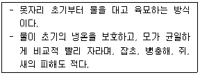
- 물뭇자리
- 발뭇자리
- 보온밭뭇자리
- 상자육묘
(정답률: 73%)
52. 다음 중 ( )에 알맞은 내용은?
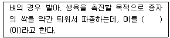
- 건열처리
- 온탕침법
- 프라이밍
- 최아
(정답률: 70%)
53. 작물의 복토 깊이가 0.5~1cm에 해당하는 것으로만 나열된 것은?
- 콩, 팥
- 옥수수, 토란
- 완두, 크로커스
- 가지, 토마토
(정답률: 50%)
54. 유기농산물 및 유기임산물의 병해충 관리를 위하여 사용이 가능한 물질 중 사용가능 조건이 “토양에 직접 살포하지 않을 것”에 해당하는 것은?
- 생석회(산화칼슘)
- 보르도액
- 수산화동
- 산염화동
(정답률: 72%)
55. 다음에서 설명하는 것은?
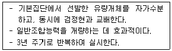
- 합성품종선발
- 단순순환선발
- 집단선발
- 영양번식선발
(정답률: 49%)
56. 유기축산물 사육장 및 사육조건에 대한 내용이다. ( )에 알맞은 내용은?
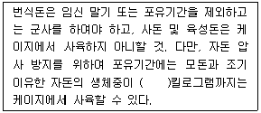
- 25
- 28
- 30
- 32
(정답률: 70%)
57. 다음 중 논(환원)상태에 해당하는 것은?
- CO2
- NO3-
- Mn4+
- CH4
(정답률: 48%)
58. 기둥과 기둥 사이에 배치하여 벽을 지지해 주는 수직재에 해당하는 것은?
- 샛기둥
- 서까래
- 중도리
- 왕도리
(정답률: 72%)
59. “전류가 텅스텐 필라멘트를 가열할 때 발생하는 빛을 이용하는 등”에 해당하는 것은?
- 백열등
- 형광등
- 수은등
- 메탈할라이드등
(정답률: 66%)
60. 다음 중 내습성이 가장 강한 것은?
- 올리브
- 포도
- 배
- 밤
(정답률: 64%)
4과목: 유기식품 가공.유통론
61. 유기농법을 적용할 경우 예상되는 결과와 거리가 먼 것은?
- 화학비료를 사용하지 않아 과용된 비료에 의한 환경오염을 줄일 수 있다.
- 잔류농약으로 인한 위험이 줄어든다.
- 농약과 비료를 사용하지 않아 고품질의 지속적인 농업 생산량 유지가 어렵다.
- 부가가치를 증가시켜 고가로 판매할 수 있어 경쟁력있는 농업으로 발전할 수 있다.
(정답률: 69%)
62. 식품의 냉장 보관 시 고려해야할 사항으로 틀린 것은?
- 식품의 종류에 따라 냉장온도를 달리한다.
- 과일과 채소의 경우 냉해가 발생되는 온도까지 냉장온도를 낮게 한다.
- 냉장실 내부 온도는 일정하게 유지되어야 한다.
- 육류, 우유 등은 빙결 온도 이상의 냉장온도에서 미생물 활동을 억제할 수 있는 온도에서 저장한다.
(정답률: 79%)
63. 친환경농산물의 유통비용을 줄이는 방안으로 적절하지 않은 것은?
- 물적 유통의 효율성을 증대시킨다.
- 직거래 등으로 유통단계를 줄인다.
- 고급 백화점에서 한정 상품으로 판매한다.
- 로컬 푸드와 같은 산지 거래를 활성화 한다.
(정답률: 79%)
64. 통조림 제조의 주요 공정을 순서대로 바르게 나열한 것은?
- 살균 - 탈기 - 밀봉 - 냉각
- 탈기 - 냉각 - 살균 - 밀봉
- 탈기 - 밀봉 - 살균 - 냉각
- 밀봉 - 살균 - 탈기 - 냉각
(정답률: 47%)
65. 유기농 오이 10kg 한 상자의 생산자격이 10000원이고, 유통마진율이 20%라고 할 때 소비자가격은 얼마인가?
- 12000원
- 12500원
- 13000원
- 13500원
(정답률: 58%)
66. 식품을 취급하는 작업장의 구비조건으로 옳지 않은 것은?
- 작업장의 입지는 폐수ㆍ오물처리가 편리하고, 교통이 편리한 곳이 좋다.
- 바닥 표면은 미끄러지지 않고 쉽게 균열이 가지 않는 재질로 하여야 한다.
- 벽과 바닥이 맞닿는 모서리는 청소를 용이하게 하기 위해 직각을 유지하는 것이 좋다.
- 작업실의 벽 및 천장은 내수성이 있어야 하며 결로가 생기지 않도록 하여야 한다.
(정답률: 78%)
67. 특정 온도에서 농산물의 호흡률과 포장 필름(film)의 적절한 투과성에 의해 포장 내부의 가스 조성이 적절하게 유지되도록 하여 농산물을 신선하게 보관하는 방법은?
- MA(moctified atmosphere) 저장
- CA(controlied atmosphere) 저장
- 가스충전 포장
- 무균밀봉 포장
(정답률: 64%)
68. 찰옥수수는 일반 옥수수에 비해서 젤화가 잘 일어나지 않고 걸쭉한 상태를 나타내는데 이는 찰옥수수의 어떤 성분 때문인가?
- 단백질
- 아밀로펙틴
- 수분
- 포도당
(정답률: 79%)
69. 무균충전 시스템과의 조합으로 상온 저장 유통이 가능하며, 고추장, 된장, 파일, 어육소시지, 어묵 등의 가공과 냉동식품의 해동에 응용이 가능한 살균방법으로 가장 적합한 것은?
- 전기지합가열법
- 적외선조사법
- 방사선살균법
- 한외여과법
(정답률: 56%)
70. 포장 재료를 선정하기 위해 고려할 사항으로 틀린 것은?
- 수분함량이 많은 식품의 포장에는 내수성이 있는 재료를 선택한다.
- 가열살균을 하는 제품의 경우 고온에서도 포장 재료의 특성 변화가 적은 것을 선택한다.
- 지방을 많이 함유하는 식품은 기체투과도가 높은 재료를 선택한다.
- 냉동식품은 저온에서도 물리적 강도변화가 적은 포장 재료를 선택한다.
(정답률: 79%)
71. 비열 1.0kcal/℃ㆍkg인 물 1000kg을 4℃에서 74℃로 가열하고자 한다. 가열 중 열손실이 50%이면 필요한 열량은 얼마인가?
- 1000kcal
- 70000kcal
- 140000kcal
- 280000kcal
(정답률: 67%)
72. 상업적 살균(commercial sterilization)에 대한 설명으로 옳은 것은?
- 모든 미생물을 사멸하되 사멸 비용을 최소화하는 것이다.
- 일정한 유통조건에서 일정한 기간 동안 위생적 품질이 유지 될 수 있는 정도로 미생물을 사멸하는 것이다.
- 병원성 미생물의 사멸을 목적으로 한다.
- 식품의 종류에 상관없이 같은 방법으로 살균하는 것이다.
(정답률: 76%)
73. 식품등의 표시기준에 따르면 식용유지류 제품의 트랜스지방이 100g당 얼마 미만일 경우 “0”으로 표시할 수 있는가?
- 2g
- 4g
- 5g
- 8g
(정답률: 75%)
74. 다음 중 HACCP의 위해요소 중 화학적 위해요소가 아닌 것은?
- 중금속
- 농약
- 항생물질
- 세균(박테리아)
(정답률: 70%)
75. 대형유통업체에서 정상가로 판매하다가 시즌 마지막에 세일 같은 저가격전략을 사용하는 가격전략을 무엇이라 하는가?
- 상시 저가격전략(EDLP:Everyday Low Pnoe)
- High/Low 가격전략
- 단수 가격전략(Odd-Price)
- 로스리더(Loss Leader) 가격전략
(정답률: 60%)
76. 유기농업에서 생태환경의 질을 유지하고 개선하기 위한 방법으로 가장 거리가 먼 것은?
- 에너지 재사용
- 에너지 재순환
- 에너지관리 효율화
- 에너지 투입 최대화
(정답률: 83%)
77. 대두유 또는 난황에서 분리한 인지질 함유 복합지질을 식용에 적합하도록 정제한 것 또는 이를 주원료로 하여 가공한 식품은?
- 레시틴식품
- 배아식품
- 감마리놀렌산식품
- 옥타코사놀식품
(정답률: 57%)
78. 미호기성 환경에서 생육하는 고온성균으로 오염된 식욕이나 조리되지 않은 닭고기 등에서 분리되는 식중독균은?
- 병원성 대장균(E. coli O157:H7)
- 살모넬라균(Salmonella typhimurium)
- 캠필로박터균(Campylobacter jejuni)
- 비브리오균(Vibrio parahaemolyticus)
(정답률: 32%)
79. 육류를 덜 익은 것 또는 날것을 육회로 섭취함으로써 인체에 감염되는 기생충이 아닌 것은?
- 회충
- 무구조충
- 유구조충
- 선모충
(정답률: 57%)
80. 신제품 기획 시 제품의 디자인 몇 제품의 특성은 마케팅 4P's Mix 중 어디에 해당하는가?
- Promotion
- Price
- Place
- Product
(정답률: 63%)
5과목: 유기농업관련 규정
81. 유기농업자재 관련 행정처분기준에서 공시 사업자 또는 유기농업자재 유통업자가 공시를 받은 원료와 다른 원료를 사용하거나 제조 조성비를 다르게 한 경우, 1회 위반 시 행정 처분은?
- 업무정지 1개월
- 지정취소
- 공시 취소 및 회수ㆍ폐기
- 판매금지 및 회수ㆍ폐기
(정답률: 49%)
82. 농림축산식품부 소관 친환경농어업 육성 및 유기식품 등의 관리ㆍ지원에 관한 법률 시행 규칙에서 “유기식품등”에 해당하는 것은?
- 수산물
- 유기수산물의 원료
- 유기사료
- 수산물 가공품
(정답률: 42%)
83. 유기배합사료제조용 물질 중 단미사료 유지류의 사용가능 조건은?
- 천연의 것일 것
- 순도 99.9퍼센트 이상인 것일 것
- 화학물질의 첨가나 화학적 제조공정을 거치지 않을 것
- 충분한 발효와 희석을 거쳐 사용할 것
(정답률: 37%)
84. 유기양봉제품의 전환기간에 대한 내용이다. ( )의 내용으로 알맞은 것은?
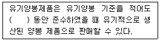
- 6개월
- 1년
- 2년
- 3년
(정답률: 58%)
85. 친환경관련법상 유기가공식품의 포장에 대한 구비요건으로 틀린 것은?
- 포장재와 포장방법은 유기가공식품을 충분히 보호하면서 환경에 미치는 나쁜 영향을 최소화되도록 선정하여야 한다.
- 포장재는 유기가공식품을 오염시키지 않는 것이어야 한다.
- 합성살균제, 보존제, 훈중제 등을 함유하는 포장재, 용기 및 저장고는 사용할 수 있다.
- 유기가공식품의 유기적 순수성을 훼손할 수 있는 물질 등과 접촉한 재활용된 포장재나 그 밖의 용기는 사용할 수 없다.
(정답률: 77%)
86. 친환경관련법상 정당한 사유 없이 1년 이상 계속하여 공시업무를 하지 아니한 경우에 농립축산식품부장관이 명할 수 있는 것은?(관련 규정 개정전 문제로 여기서는 기존 정답인 1번을 누르면 정답 처리됩니다. 자세한 내용은 해설을 참고하세요.)
- 6개월 이내의 기간을 정하여 그 업무의 전부 또는 일부의 정지를 명할 수 있다.
- 12개월 이내의 기간을 정하여 그 업무의 전부 또는 일부의 정지를 명할 수 있다.
- 24개월 이내의 기간을 정하여 그 업무의 전부 또는 일부의 정지를 명할 수 있다.
- 36개월 이내의 기간을 정하여 그 업무의 전부 또는 일부의 정지를 명할 수 있다.
(정답률: 64%)
87. 친환경관련법상 인증심사원의 자격 취소 및 정지 일반기준에 대한 내용이다. ( )의 내용으로 알맞은 것은?
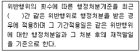
- 6개월
- 1년
- 2년
- 3년
(정답률: 33%)
88. 애완용동물 유기사료 중 가공원료에 대한 사항이다. ( )의 내용으로 알맞은 것은?
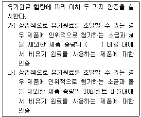
- 1퍼센트
- 5퍼센트
- 10퍼센트
- 15퍼센트
(정답률: 55%)
89. 친환경관련법에서 농업의 근간이 되는 흙의 소중함을 국민에게 알리기 위하여 흙의 날을 정하였는데, 흙의 날은?
- 10월 11일
- 8월 11일
- 5월 11일
- 3월 11일
(정답률: 74%)
90. 농림축산식품부장관 또는 해양수산부장관은 관계 중앙행정기관의 장과 협의하여 몇 년마다 친환경농어업 발전을 위한 친환경농업 육성계획 또는 친환경어업 육성계획을 세워야 하는가?
- 2년
- 3년
- 5년
- 7년
(정답률: 76%)
91. 유기농산물 및 유기임산물의 토양개량과 작물성육을 위하여 사용이 가능한 물질 중 사람의 배설물이 있다. 사람의 배설물의 사용가능 조건에 해당하지 않는 것은?
- 미생물의 배양과정이 끝난 후에 화학물질의 첨가나 화학적 제조공정을 거치지 않을 것
- 완전히 발효되어 부숙된 것일 것
- 고온발효 : 50℃ 이상에서 7일 이상 발효된 것
- 저온발효 : 6개월 이상 발효된 것일 것
(정답률: 42%)
92. 유기가공식품에서 포장에 대한 내용이다. ( )의 내용으로 알맞은 것은?
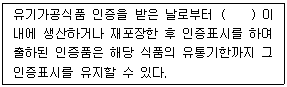
- 1년
- 2년
- 3년
- 5년
(정답률: 73%)
93. 친환경관련법상 경영관련 자료에서 생산자에 대한 내용이다. ( 가 )에 알맞은 것은?
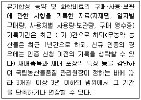
- 3개월
- 6개월
- 2년
- 3년
(정답률: 68%)
94. 유기식품등의 유기표시 기준 작도법에서 표시 도형의 국문 및 영문 모두 글자의 활자체는 무엇으로 사용해야 하는가?
- 궁서체
- 굴림체
- 돋움체
- 고딕체
(정답률: 72%)
95. 다음 중 ( )에 해당하지 않는 것은?
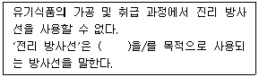
- 살균
- 살충
- 발아억제
- 이물방지용 방사선
(정답률: 45%)
96. 친환경관련법상 인증기관의 지정기준에서 인력에 대한 내용이다. ( )의 내용으로 알맞은 것은?
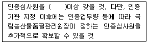
- 3명
- 5명
- 7명
- 9명
(정답률: 54%)
97. 무농약농산물의 재배 방법 구비요건에 대한 내용이다. ( )의 내용으로 알맞은 것은?
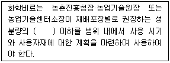
- 2분의 1
- 3분의 1
- 5분의 1
- 7분의 1
(정답률: 66%)
98. 일반농가가 유기축산으로 전환하여 유기축산물을 생산ㆍ판매하려는 경우에는 전환기간 이상을 유기축산물 인증기준에 따라 사육하여야 하는데 한우ㆍ육우의 식육 생산물을 위한 최소 사육기간으로 옳은 것은?
- 입식 후 출하 시까지(최소 3개월)
- 입식 후 출하 시까지(최소 6개월)
- 입식 후 출하 시까지(최소 9개월)
- 입식 후 출하 시까지(최소 12개월)
(정답률: 52%)
99. 유기가축 1마리당 갖추어야 하는 가축사육 시설의 소요면적(단위:m2)에 대한 내용이다. ( )의 내용으로 알맞은 것은?
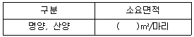
- 0.5
- 1.3
- 2.7
- 3.1
(정답률: 40%)
100. 친환경관련법상 유기농축산물의 함량에 따른 표시기준에서 특정 원재료로 유기농축산물을 사용한 제품에 대한 설명으로 틀린 것은?
- 특정 원재료로 유기농축산물만을 사용한 제품이어야 한다.
- 해당 원재료명의 일부로 “유기”라는 용어를 표시할 수 있다.
- 원재료명 및 함량 표시란에 유기농축산물의 총함량 또는 원료별 함량을 ppm으로 표시하여야 한다.
- 표시장소는 원재료명 및 함량 표시란에만 표시할 수 있다.
(정답률: 72%)